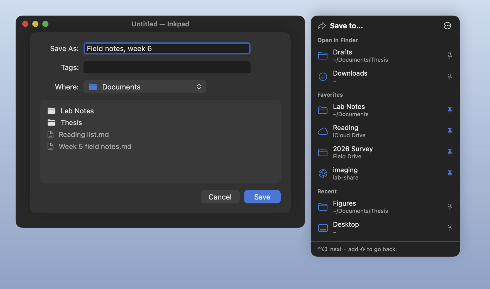

Right Folder
The folder's open in Finder, and the Save dialog starts in Documents anyway. Right Folder puts your Finder folders, recent folders and favorites beside every Open and Save dialog. One click, or ⌃⌥J, and it's there.
Thanks for downloading! If it saves you some clicking, a star on GitHub helps other people find it.
free · open source · macos 14+ · a free default folder x alternative · no internet access
What you get

- Folders open in Finder, front window first, beside every Open and Save dialog, sheet or window, in any app that uses the standard ones.
- Favorites you pin with one click. They follow a folder when you rename or move it.
- Recent folders: ones you jumped to, and the one open in Finder when a dialog appeared. Turn it off and the list is cleared.
- ⌃⌥J steps through them, and ⌃⌥⇧J goes back. The shortcut exists only while a dialog is open.
- iCloud Drive, drives and network shares, named the way Finder names them. One that isn't connected is marked, never waited on.
What it never does
- Read what you type. No keyboard monitor; macOS tells it only that ⌃⌥J was pressed.
- Read your windows. Only whether the window in front is an Open or Save dialog, from its role and identifier, never its title or text.
- Look in your folders. It knows folder paths and checks a folder exists, without listing it or opening a file.
- Click Save for you. Keys go only to the dialog's app, and Return only to its Go to Folder field.
- Go online. No network code and no entitlements at all, checked by CI on every build.
Questions
Is it a free Default Folder X alternative?
For the core of it, yes: the folders open in Finder, recent folders and favorites, a click away in every Open and Save dialog. Default Folder X does much more, like previews, tags and file info in the dialog. Right Folder does the jumping, for free, with its source open.
How do I make a Save dialog open in my Finder folder?
With Right Folder running, the folder open in Finder is listed first beside the dialog. Click it, or press ⌃⌥J.
Why does it need Accessibility?
To notice an Open or Save dialog, read which folder each Finder window shows, and press ⇧⌘G in the dialog when you pick a folder. Nothing else: no Automation, Full Disk Access, Input Monitoring or Screen Recording. The details are in SECURITY.md.
Does it work in every app?
In apps that use the standard macOS Open and Save dialogs, which is nearly all of them, as sheets or windows. Apps with their own file browser aren't recognized. If one you use is missed, say which.
Why do I allow it again after an update?
Each release is signed for that exact build, and macOS ties Accessibility to it, so no other program can borrow the permission by pretending to be Right Folder. Remove the old entry with – in Privacy & Security → Accessibility, then allow the new one.